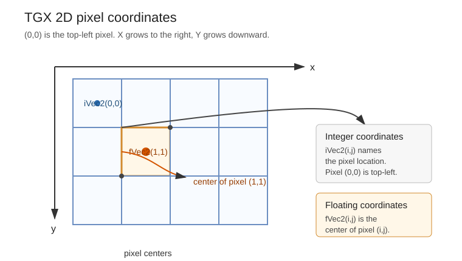

|
TGX 1.0.8
A tiny 2D/3D graphics library optimized for 32 bits microcontrollers.
|
|
TGX 1.0.8
A tiny 2D/3D graphics library optimized for 32 bits microcontrollers.
|
The TGX library's main class is the tgx::Image class which, as its name suggests, encapsulates an image, that is a rectangular array of pixels of a given color type. The library provides an extensive set of 2D and 3D drawing procedures that operate on image objects.
All methods/classes are defined inside the tgx namespace. To use the library, just include tgx.h:
A minimal TGX framebuffer is just a pixel buffer plus an Image view over it:
The library defines several color classes. Choosing the right one is mostly a question of memory, speed and intended use:
| Type | Layout | Storage/alignment | Typical use |
|---|---|---|---|
| tgx::RGB565 | 16-bit RGB: 5 bits red, 6 bits green, 5 bits blue | Aligned as and convertible to uint16_t | Preferred type on MCU displays: compact, fast, and compatible with many embedded display drivers. |
| tgx::RGB24 | 24-bit RGB: 8 bits red, 8 bits green, 8 bits blue | No special alignment | Useful on CPU or when a simple 24-bit image format is convenient and no alpha channel is needed. |
| tgx::RGB32 | 32-bit RGBA: 8 bits per channel, pre-multiplied alpha | Aligned as and convertible to uint32_t | Useful when an alpha channel is needed, especially for pre-multiplied alpha blending. |
| tgx::RGBf | 96-bit RGB: 32-bit float per channel | Aligned as float, no alpha channel | Used for floating-point color computations, especially with the 3D API lighting/material code. |
| tgx::RGB64 | 64-bit RGBA: 16 bits per channel, pre-multiplied alpha | Aligned as and convertible to uint64_t | Use only when high precision and alpha are both needed; heavier than the usual MCU formats. |
| tgx::HSV | 96-bit HSV: 16 bits Hue, 16 bits Saturation, 16 bits Value | Partial support only | Mainly an intermediate color space for conversions or procedural color generation; slow for drawing operations. |
Color types are handled just like usual basic types such as int or char. Any color type can be converted into any other color type.
Examples:
Predefined colors: Black, White, Blue, Green, Purple, Orange, Cyan, Lime, Salmon, Maroon, Yellow, Magenta, Olive, Teal, Gray, Silver, Navy, Transparent.
Example:
For additional details on color manipulations, look directly into the color classes definitions in color.h.
Color types tgx::RGB32 and tgx::RGB64 have an alpha channel which is used for alpha-blending during drawing operations.
Other color types do not have an alpha channel but the library still supports simple blending operations through the optional opacity parameter added to all drawing primitives. This parameter ranges in [0.0f, 1.0f] with
opacity = 1.0f: fully opaque drawing. This is the default value when the parameter is omitted.opacity = 0.0f: fully transparent drawing (so this draws nothing).Example:
The tgx::Image class is a lightweight view over an existing pixel buffer. It does not allocate memory and it does not own the pixels. It only records how to interpret a rectangular region of memory as an image. These four values are the whole state of an Image view:
| Field | Meaning |
|---|---|
data() | Pointer to the first visible pixel. |
lx() | Width of the image, in pixels. |
ly() | Height of the image, in pixels. |
stride() | Distance, in pixels, between the beginning of two consecutive rows. |
This design is important on embedded targets: the application controls where buffers live, for example in RAM, external memory or flash/ROM. As a general rule, the TGX library never performs dynamic memory allocation.
The most common pattern is to create a pixel buffer, then attach an Image view to it directly in the constructor:
An image can also be default-constructed and attached to a buffer later:
The position of a pixel inside an image is given in row-major order:
Pixel(i, j) = buffer[i + stride*j]
for 0 ≤ i < lx and 0 ≤ j < ly.
The stride is the distance, in pixels, between the beginning of one row and the beginning of the next row. For a standalone image, it is usually equal to lx. For a sub-image, it is often larger because the sub-image still points inside the original parent buffer:
A sub-image is another Image object that points to a rectangular part of an existing image. It shares the same pixel buffer and clips drawing operations to its own rectangle. Drawing coordinates are local to the sub-image:
For this sub-image, panel.data() points inside buffer, panel.lx() is 31, panel.ly() is 101, and panel.stride() is still 320, the stride of the parent image.
This is why TGX can create sub-images without copying pixels: it only changes the starting pointer, width, height and stride stored in the tgx::Image object.
See also: Image::set(), Image::crop(), Image::getCrop(), Image::operator(), Image::isValid(), Image::setInvalid(), Image::imageBox().
TGX uses the usual framebuffer coordinate system: the pixel (0,0) is located at the top-left corner of the image, the X coordinate grows to the right, and the Y coordinate grows downward.

Pixel addressing varies slightly when using integer-valued coordinates vs floating point-valued coordinates:
| Coordinate type | Meaning of (i,j) | Whole image box for an image of size lx x ly |
|---|---|---|
iVec2, iBox2 | Pixel index/location | iBox2(0, lx - 1, 0, ly - 1) |
fVec2, fBox2 | Center of pixel (i,j) | fBox2(-0.5f, lx - 0.5f, -0.5f, ly - 0.5f) |
For example, the floating point box occupied by pixel (0,0) is fBox2(-0.5f, 0.5f, -0.5f, 0.5f), centered at fVec2(0.0f, 0.0f).
The difference matters when mixing exact pixel primitives and anti-aliased or sub-pixel primitives. As a rule of thumb, use integer coordinates for exact pixel primitives and floating point coordinates for anti-aliased or sub-pixel primitives.
The tgx library defines classes for 2D vectors and boxes:
| Class | Meaning |
|---|---|
| tgx::iVec2 | Integer-valued 2D vector, used for pixel locations. |
| tgx::fVec2 | Floating point-valued 2D vector, used for sub-pixel precision. |
| tgx::iBox2 | Integer-valued 2D box, used to represent a rectangular pixel region. |
| tgx::fBox2 | Floating point-valued 2D box, used to represent a sub-pixel rectangular region. |
Vectors and boxes support the usual operations: arithmetic (addition, scalar multiplication, dot product...), copy and type conversion.
Boxes use the order (minx, maxx, miny, maxy):
Integer boxes are inclusive: both min and max coordinates belong to the box. Therefore, the width of the box above is 80 - 40 + 1 = 41 pixels. This differs from half-open rectangle conventions used by some other libraries.
Most drawing methods take vectors and boxes as input parameters instead of scalars. It is recommended to use initializer lists to make the code more readable. For example, write {10, 20} instead of tgx::iVec2(10, 20).
RGB565(31, 63, 31). Use float constructors such as RGB565(1.0f, 1.0f, 1.0f) when you want normalized color values.The memory buffer an image points to may reside in flash/ROM and it is possible to define const images directly in .cpp files for easy inclusion in a project.
For example, the 10x10 image
can be stored as:
The /tools/ subdirectory of the library contains the tgx_image.py graphical converter and the advanced cli_tools/tgx_image_cli.py command-line converter. They turn classical image files (PNG/JPEG/BMP...) into TGX image headers or .h + .cpp pairs.
Recall that a tgx::Image object is just a view into a buffer of pixels of a given color type. Thus, copies of image objects are shallow (they share the same image buffer / same color type).
The library provides methods to create "deep" copies and convert images to different color types:
You now know how TGX images store pixels, how coordinates work, and how image objects refer to their pixel buffers.
Choose the next tutorial depending on what you want to draw:
| Goal | Continue with |
|---|---|
| Draw pixels, lines, rectangles, circles, curves, sprites, text, image blits or 2D user-interface elements. | The 2D API tutorial |
| Render 3D primitives, meshes, lights, textures, Z-buffered scenes, cameras and projections. | The 3D API tutorial |
Of course, projects can use both parts together: the 3D renderer draws into an image, and the 2D API can then overlay text, user-interface elements, debug information or sprites on top of the rendered frame.